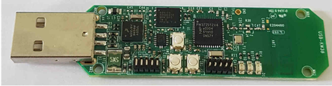

The USB-KW38 board is mainly targeted for sniffer applications. It is based on the KW37Z
SoC. A figure representing the platform is shown below. For detailed information about
the board, see the appropriate board user’s guide.
Figure 1. USB-KW38 platform
